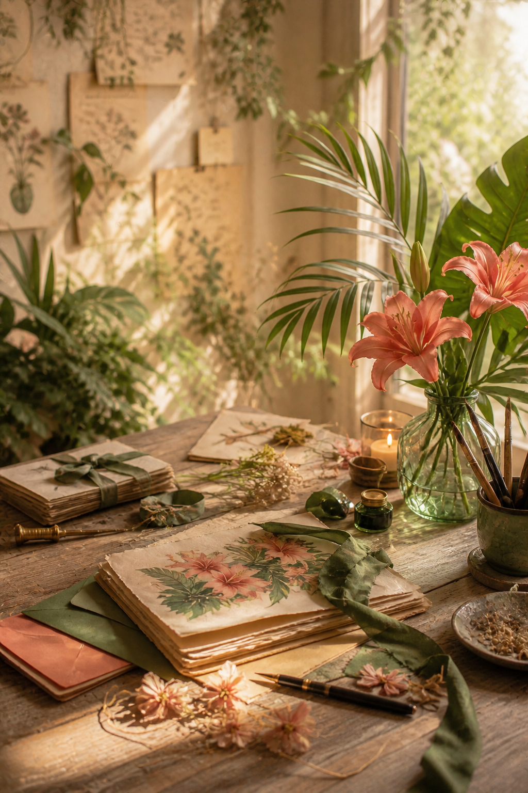
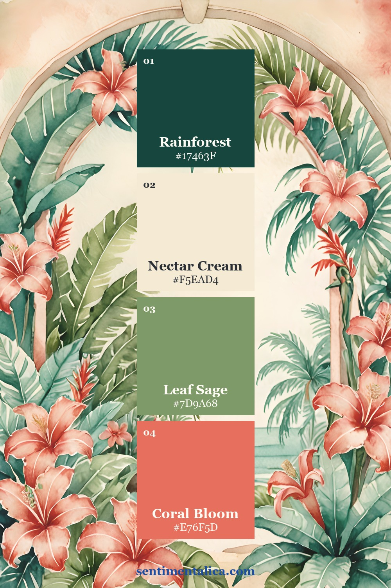
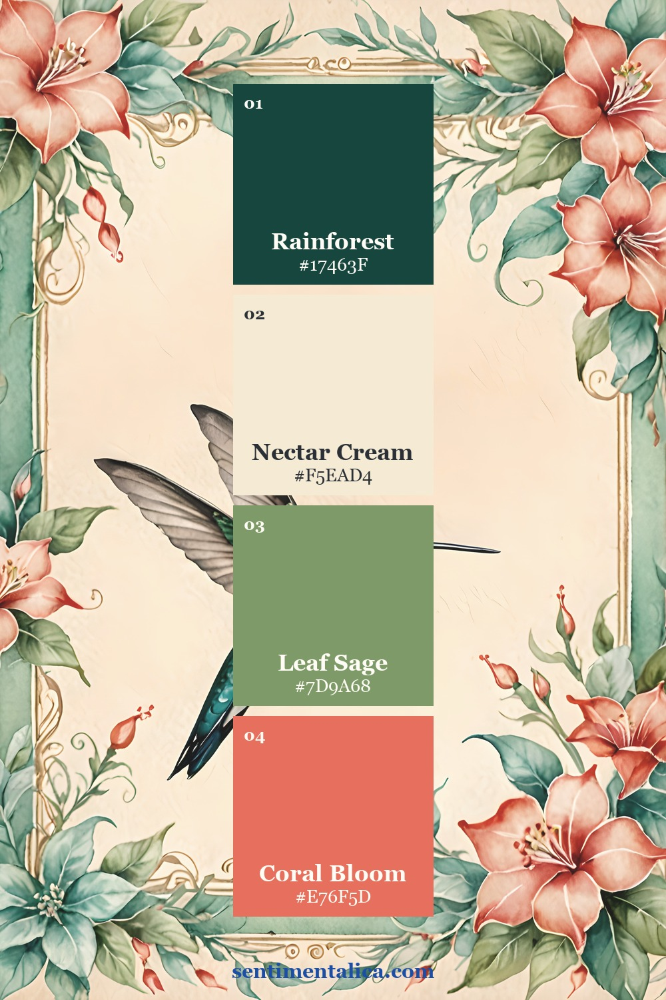
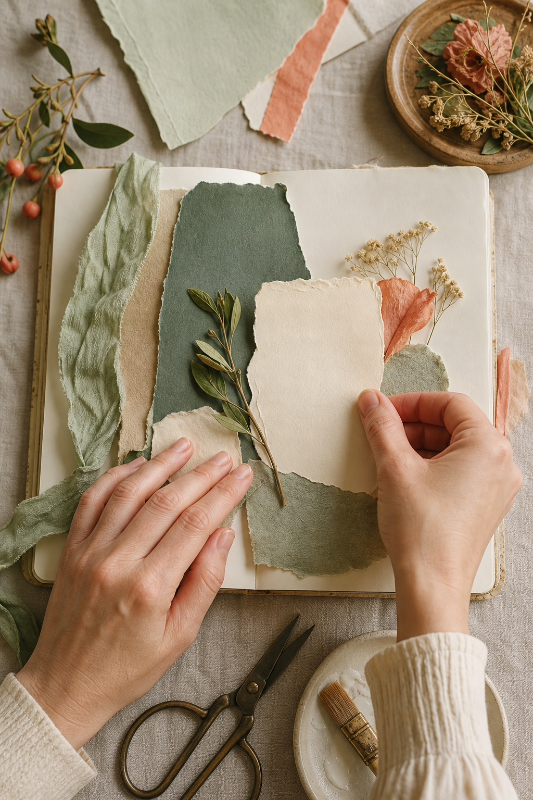
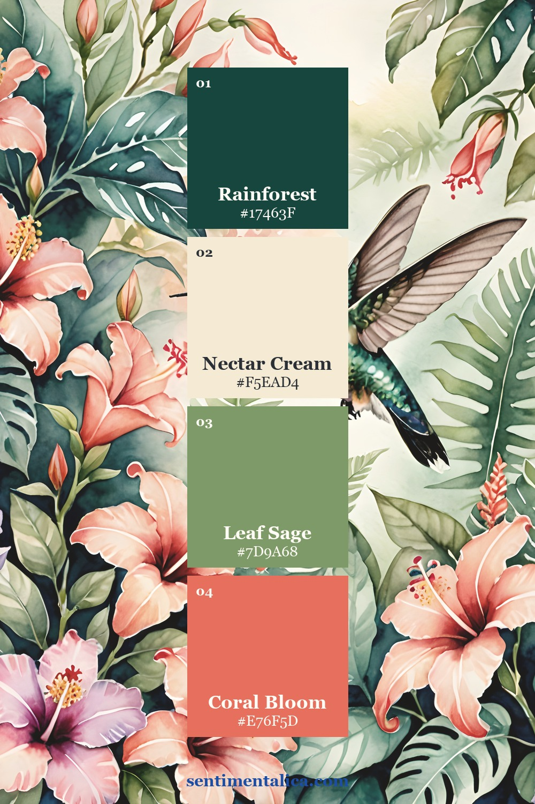
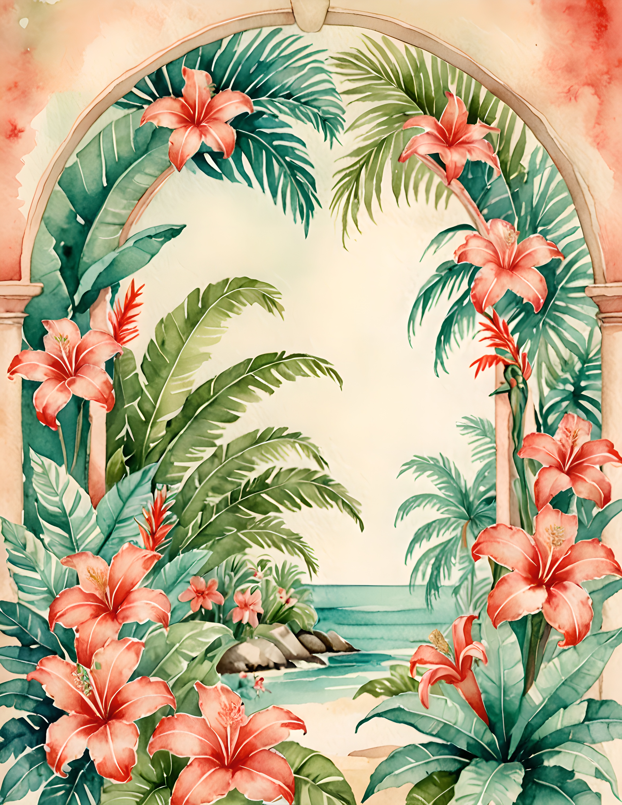
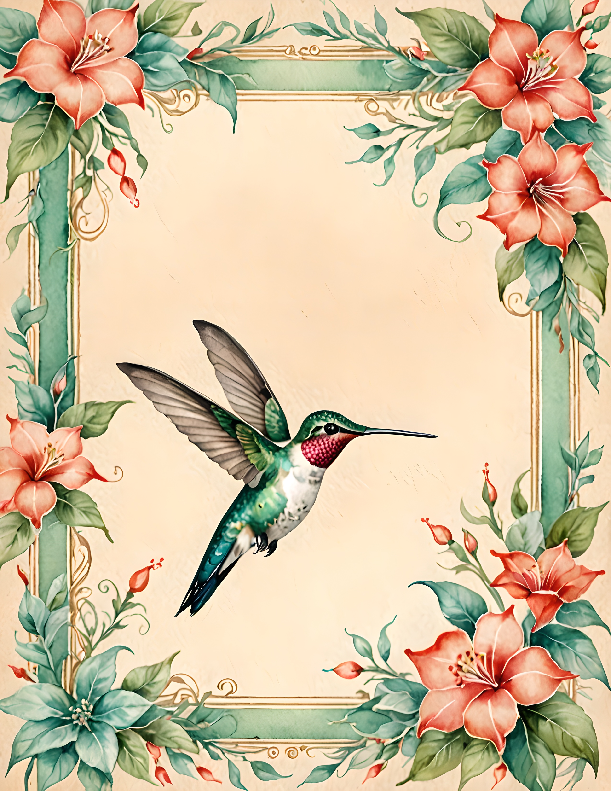
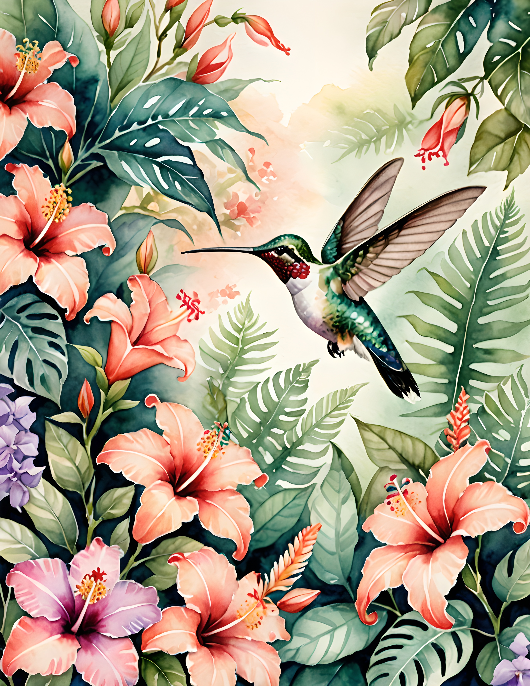

Tropical journal pages often contain so much color that every detail competes. A four-color limit changes that. Rainforest green creates depth, nectar cream provides rest, leaf sage connects the foliage, and coral bloom brings the page to life.

The Nectar Bloom palette
Use Rainforest as the dark anchor, Nectar Cream as the light neutral, Leaf Sage as the supporting mid-tone, and Coral Bloom as the hero accent. Begin with cream rather than green. It gives both the foliage and the warm flower color enough separation to remain readable.

Create movement with leaf direction
Angle foliage inward from two corners instead of framing every edge. A diagonal leaf or stem can guide the eye toward a photograph or journaling card. Keep the darkest green low or near the binding so the page does not feel top-heavy.

Use birds as a focal point, not a pattern
If your selected image includes a hummingbird or another bird, let it be the only prominent creature on the spread. Place a cream writing card in the direction of its gaze or flight. Repeat the throat or flower color once in a small tab, then stop.

Balance tropical warmth with texture
Use fibrous cream paper, faded sage fabric, and one smooth coral layer. The texture changes prevent the limited palette from feeling flat. Dried grasses or a thin natural cord can add a neutral detail without introducing another competing hue.

See the palette across the collection



A tropical spread formula
Choose one botanical scene, one cream card, two sage scraps of different sizes, one dark green edge, and one coral tab. Add a short observation about a garden, journey, or bird sighting. The written detail gives the lush imagery a reason to be there.
The Nectar Bloom commercial-use watercolor image pack brings together tropical florals, botanical frames, and bird imagery in this coordinated palette. Use a full page as the showpiece or crop one motif for a smaller focal layer.
Image note: Atmospheric and process visuals in this article were created with AI and curated by Sentimentalica. The displayed collection pages are authentic listing artwork.